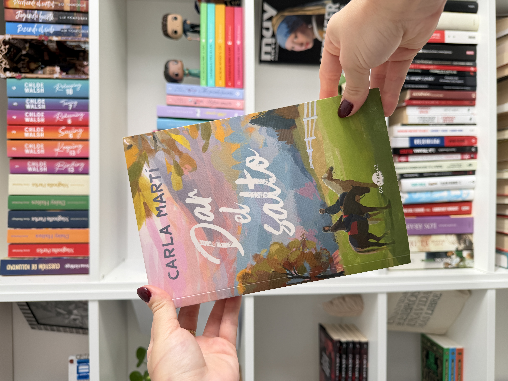

No podrás parar con este libro

Effy está a punto de batir un récord de salto ecuestre cuando se queda sin entrenador. Quien acaba preparándola es Rainer Keller, un excampeón que lleva cinco años apartado de la competición desde su último mundial. Ella quiere hacer historia y él solo quiere cumplir con el encargo. Lo de mantener la relación estrictamente profesional se les va complicando por momentosss🤭 Es la primera vez que leo a Carla Martí y, la verdad, le tenía poca fe al libro. Pues he acabado llorando varias veces (qué novedad jajaja🫣) y he conectado muchísimo con Effy. Me ha gustado mucho esa fachada de chica dura que parece tener una sola cosa en la cabeza, ganar. Cuanto más la conoces, más entiendes lo personal que es para ella batir ese récord. Y ahí fue cuando me enganchó su historia. Con Rainer he tenido mis más y mis menos. Me gustó mucho ese rechazo del principio y cómo poco a poco se va creando la tensión entre los dos. Pero hubo momentos en los que le cogí rabia de verdad. Era un «ahora sí, ahora no» constante y yo pensando «¿te vas a aclarar en algún momento?» jajaja😤. Luego vas entendiendo cuánto le sigue pesando lo que pasó en su último mundial y por qué le cuesta tanto dar un paso sin echarse atrás al siguiente. La historia entre ellos me ha gustado muchísimo, pero si tengo que elegir, me quedo con la historia de cada uno por separado. Me gustó ir descubriendo qué hay detrás de las ganas de ganar de Effy y de todas las veces que Rainer se echa para atrás. Eso hizo que el tira y afloja me enganchase todavía másssss😋 Y mira que no soy muy fan del slow burn, pero aquí no se me ha hecho nada pesado. Me ha encantadoooooo 🥹